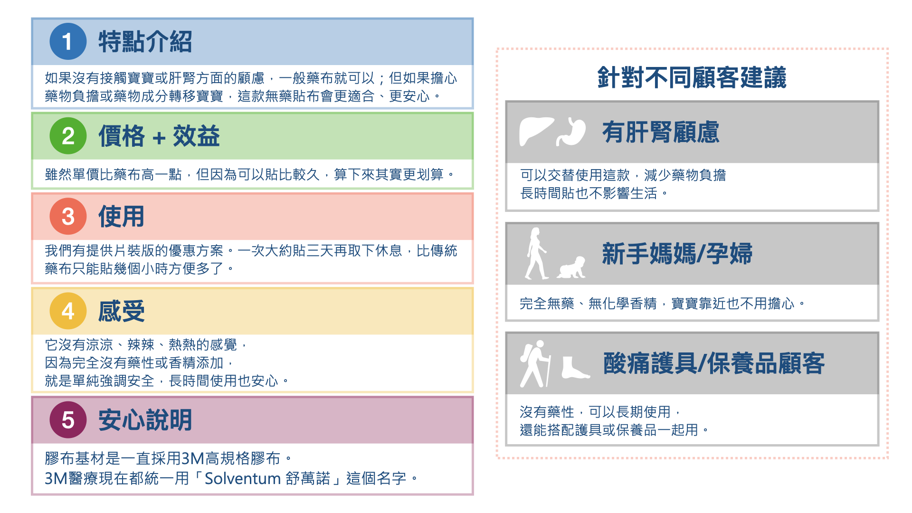

1. 商品核心內容與優勢
獨家礦物科技與配方
- 基底為 AERO TERRA® 核心配方（源於自然礦物）。
- 經檢驗具備釋放遠紅外線特性，溫和調理。
- 訴求自然舒適，溫和調理身體平衡。
- 先講求無害-用得安全，再講求有效舒緩
Artificer Layers® 疊加技術
- 運用 Artificer Layers® 礦物疊加技術製成貼布。
- 將礦物原料與水性顏料調和，確保礦物含量。
- 無添加藥性成分（樟腦、香精、薄荷醇）。
- 採用 Solventum® 透氣膠帶，親膚性高。
高標準安全與適用性
- 所有礦物原料經第三方國際安全檢驗測試。
- 通過 SGS 及歐盟 EN71 安全標準。
- 適用於生活日常、辦公久坐、運動前後。
- 適合對傳統藥布氣味或成分敏感者。
定價與包裝資訊 (關鍵銷售數字)
| 產品類型 | 總數量 (貼片) | 包裝規格 | 售價 | 單片平均價格 |
|---|---|---|---|---|
| 經典盒裝 (長期推薦) | 60 | 5 片裝 (每片 12 個貼片) | NT$800 | NT$13.3 / 片 |
| 單片體驗裝 (新客推薦) | 12 | 1 片裝 (每片 12 個貼片) | NT$200 | NT$16.7 / 片 |
→ 銷售策略：建議先以單片裝（NT$200）邀請新客體驗，再推銷盒裝的長期使用效益與單價優惠。
2. 根據檢驗標準的適用族群 (目標客群)
由於產品通過了高標準的第三方安全檢驗，特別適用於以下對成分安全要求高的族群：
極度安全考量者 (針對成分)
- 敏感體質/皮膚過敏者：無樟腦、無薄荷醇、無西藥成分，大幅降低過敏風險。
- 長期使用者：因不含藥性，可作為日常保養，不受藥布使用時間限制。
- 兒童與長者：通過歐盟 EN71 玩具安全標準，且經加馬能譜分析，原料安全無虞。
追求純淨無負擔者 (針對添加物)
- 孕婦/哺乳期婦女：避免傳統藥布中刺激或具疑慮的化學成分（請仍建議諮詢醫生）。
- 不喜氣味者：無添加香精，貼敷隱形，不會產生濃烈藥味或薄荷味。
- 重視品質與原料者：原料經重金屬、微生物、塑化劑等多項嚴格檢測。
3. 貼布使用指南與技巧 (How to Use)
貼敷規格與時長
- 規格：貼布為直徑約 2.5 cm 的圓形貼片，一排 3 個，共 12 個點狀貼布。
- 使用時長：可連續貼敷 72 至 96 小時，不受傳統藥布時間限制。
- 貼敷原則：請貼於乾燥、清潔的皮膚上，毛髮過多處容易翹起或脫落。
建議貼敷點 (強化專業度)
- 範圍使用：每一個貼片間隔一個貼片的距離
- 局部不適點： 直接貼於最感到緊繃或痠脹的部位。
- 大肌群：可沿著頸肩、下背或小腿大肌群貼成一條線，增強舒適感。
- 穴位平衡：可貼在特定穴位如肩井、足三里或合谷，輔助身體平衡。
4. 重要的使用禁忌與注意事項
銷售紅線：絕對不可貼敷的區域
- 皮膚損傷處：禁止貼在傷口、濕疹、發炎、化膿、曬傷或黏膜等皮膚異常部位。
- 特殊病症：若曾有重大疾病或正接受治療，建議使用前諮詢專業醫護人員。
- 孕婦：懷孕期間，因腹部皮膚較敏感，避免貼於腹部造成過敏。
- 撕除處理：撕除時請輕柔緩慢，避免拉傷皮膚。若遇毛髮處，建議低角度緩慢絲除。
★ 提醒：若使用中感到紅、腫、癢等不適，應立即撕除並就醫。
5. 銷售情境演練 (模擬問答)
請反覆練習以下情境，提升您的服務專業度。
只要開啟銷售情境，就都可以在對話結尾加上:需要我幫您貼上一片嗎?(請當場幫顧客貼上試用，不用贈送的方式)
6. 必殺推銷三句話 (即刻吸引顧客)
這三句話旨在迅速抓住顧客的痛點與需求，請熟練運用：
「純天然礦物來源」
→ 強調產品的天然、安全特性。「符合多項安全規範」
→ 突出產品的權威認證，建立信任感。「無需擔心肝腎有負擔即刻達到肌肉舒緩效果」
→ 解決顧客對副作用的擔憂，並強調快速見效。7. 產品知識測驗 (測驗開始)
請完成以下六題單選題，以確保您已熟悉產品核心知識。滿分 100 分。
8. 產品懶人包

（點選圖片可放大）